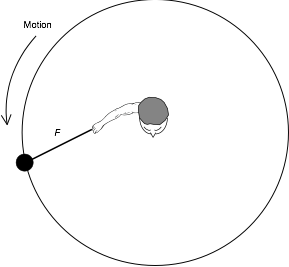

Question 7
The hammer throw is a track
and field event which involves rotational motion. On the first throw, an
athlete rotates his hammer with a velocity of 10 m/s. On his second throw,
he plans to double the velocity of the hammer.
Hammer Throw – Top View

What will be the effect
of doubling the velocity of the hammer on the centripetal force?
A) The centripetal force will be increased by
a factor of two.
B) The centripetal force will be increased by
a factor of four.
C) The centripetal force will be decreased by
a factor of two.
D) The centripetal force will be decreased by
a factor of four.